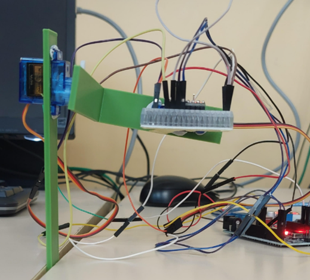

images/stabilisateur.png.Septembre 2025 — Mai 2026
Stabilisateur vidéo mécanique à 2 axes
Conception et réalisation de A à Z d'un stabilisateur vidéo asservi, piloté par Arduino.
Voir la fiche complète
- Contexte et durée
- Projet réalisé dans le cadre de mon TIPE en classe préparatoire (filière PCSI/PSI), de septembre 2025 à mai 2026.
- Objectif
- Concevoir un système embarqué capable de compenser les mouvements de l'utilisateur pour stabiliser une caméra sur deux axes, en appliquant la théorie des systèmes asservis à un cas pratique.
- Étapes du projet
-
- Recherche et dimensionnement : Étude théorique des systèmes asservis et sélection des composants (Arduino, servomoteurs, capteur MPU6050 combinant accéléromètre et gyroscope, convertisseur Buck).
- Conception mécanique : Modélisation 3D sur Onshape (équerre et tige) en assurant la parfaite concourance des axes.
- Montage électronique : Assemblage et câblage optimisés (réduction du nombre et de la longueur des fils) pour minimiser l'inertie des câbles sur la structure.
- Programmation et contrôle : Développement du code en C (Arduino) pour l'asservissement, et création de scripts Python pour le tracé des courbes de réponse et l'ajustement des gains.
- Ma contribution
- J'ai mené l'intégralité de ce projet en autonomie : de la recherche bibliographique initiale à la modélisation 3D, jusqu'au montage électronique et l'écriture des algorithmes de contrôle.
- Résultat et bilan
- Le prototype final est fonctionnel. Lors des essais, j'ai identifié un problème de tremblements lié à l'asservissement en position, que j'ai réussi à corriger en implémentant un asservissement en vitesse. Ce projet m'a permis de consolider mes compétences en électronique, en programmation (C/Python) et de confronter la théorie de l'automatique aux contraintes du monde réel.